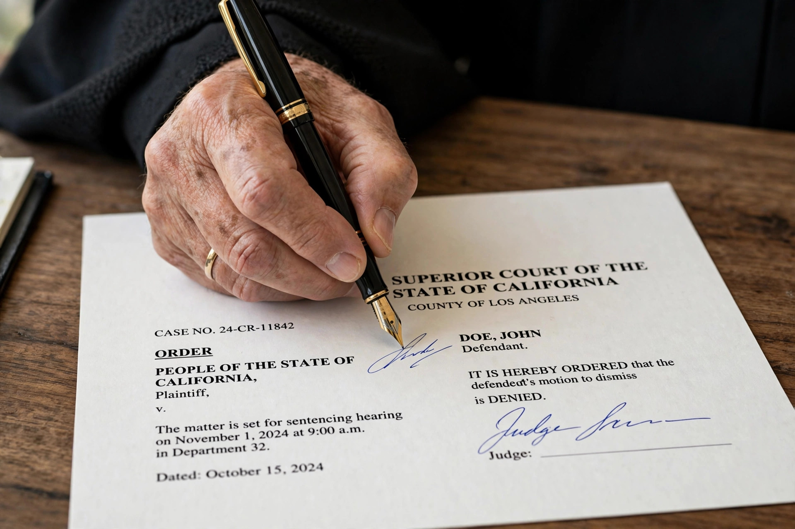

A warrant is a legal document issued by a judge or other judicial officer that authorises law enforcement officials to perform an act that would otherwise constitute a trespass or an infringement of constitutional rights — most commonly to make an arrest, to search premises, or to seize property. The institution of the warrant is central to the administration of the Fourth Amendment in the United States and to analogous protections in other common law countries.
Under the Fourth Amendment, a warrant may issue only upon probable cause, supported by oath or affirmation, and must particularly describe the place to be searched and the persons or things to be seized. Applications are normally presented ex parte to a neutral and detached magistrate, who evaluates probable cause under the totality of the circumstances following Illinois v. Gates (1983). Execution is usually subject to knock-and-announce requirements and time limits. Evidence seized under a defective warrant may nonetheless be admitted if officers relied on it in objective good faith (United States v. Leon, 1984).
The particularised warrant requirement arose in reaction to the general warrants used in eighteenth-century Britain and the colonies — open-ended authorisations to search wherever officials pleased, including writs of assistance allowing customs officers to search for smuggled goods. Their abuse, condemned in Entick v. Carrington (1765) and denounced by James Otis in Boston, was a principal grievance behind the American Revolution and directly shaped the Fourth Amendment's text.
From Wikipedia, the free encyclopedia.